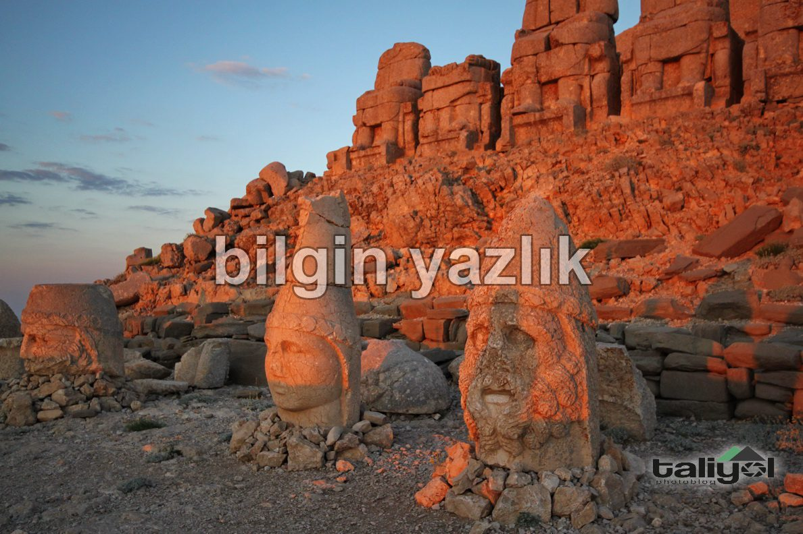
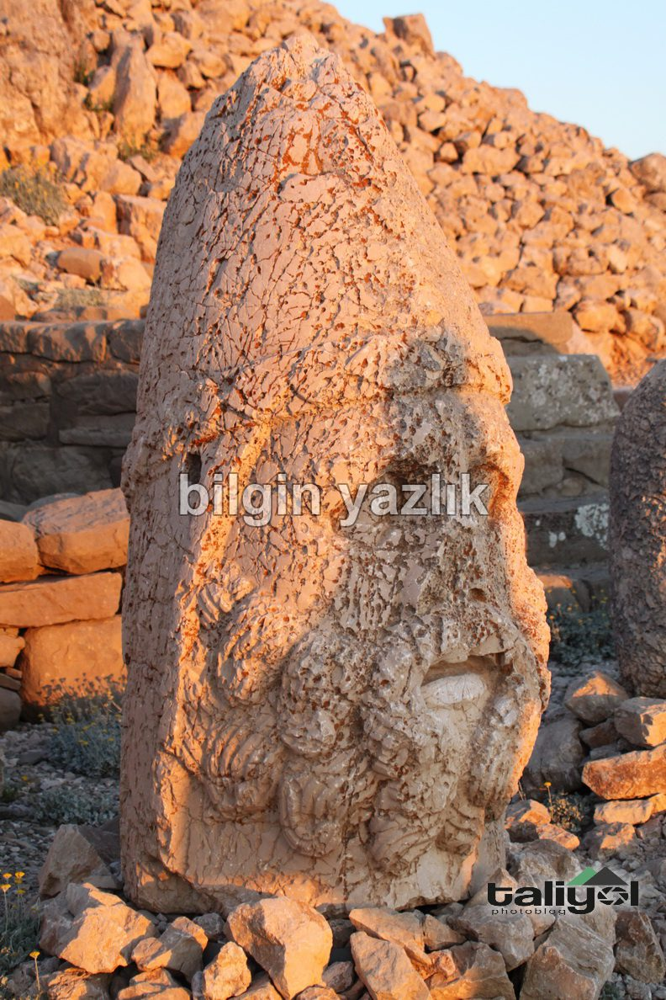
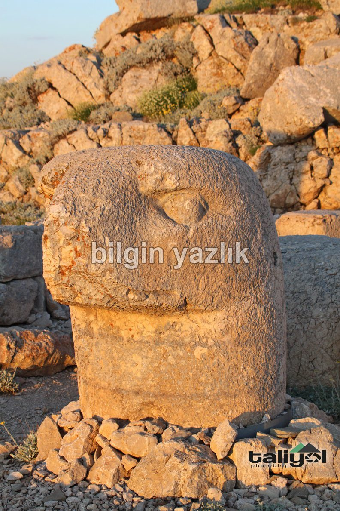

Nemrut Dağı ve Kral Heykelleri
Nemrut dağı denildiğinde aklımıza ilk olarak kral heykelleri gelir. Bu durum gayet doğal çünkü gidip gördüğünüzde anlayacaksınız ki gerçekten benzersiz heykeller bunlar.
Nemrut dağına ulaşmak için önce Adıyaman’a oradan da Kahta’ya geçiyorsunuz, daha sonra Nemrut dağı milli parkı yoluna giriyorsunuz, yol uzun fakat gayet düzgün. Kış aylarında, yerde kar varken yukarıya çıkmak imkansız, öyle ki biz Haziran ayında bile kral heykellerinin bulunduğu zirveye çıkamadık. (Gitmeden önce milli parktan zirve yolunun açık olup olmadığını sormak lazım)
Kral heykelleri Nemrut dağının zirvesinde doğuya bakacak şekilde yapılmış, gün doğumu bu noktadan nefes kesici bir biçimde izleniyor, öyle ki güneş ayaklarınızın altından doğuyor gibi hissediyorsunuz, herkese ölmeden önce en az bir defa gün doğumunu buradan izlemelerini şiddetle tavsiye ediyorum, o kadar etkilendim ki ne zaman güzel bir şey hayal etmek istesem gözümün önüne ilk heykeller ve gördüğüm kızıl güneş geliyor.
Tabii kral heykellerinin arasından gün doğumunu izlemek o kadar da kolay değil, bunun için gün doğmadan 2 ya da 3 saat önce uyanmalı, zifiri karanlıkta dağ yolundan araba ile tırmanmalısınız, araba ile heykellerin dibine kadar gidemiyorsunuz, aracı 150 metre aşağıya park edip yürüyerek tırmanmanız gerekiyor. Tüm bunların üstüne bir de güçlü esen ve iliklerinize kadar üşüten rüzgarı ekleyelim.
Kral heykelleri devasa boyutlarda ve nitelikli işçilik ile yapılmış, zirvenin batı tarafında da gün batımına bakan nispeten küçük heykeller var.
Nemrut dağının dört bir tarafı medeniyet timsali eserlerle dolu, günlerce gezilse bu dağ ve bu eserler bitmez.



Bu yazı taliyol arşivinden taşınmıştır. · özgün kayıt